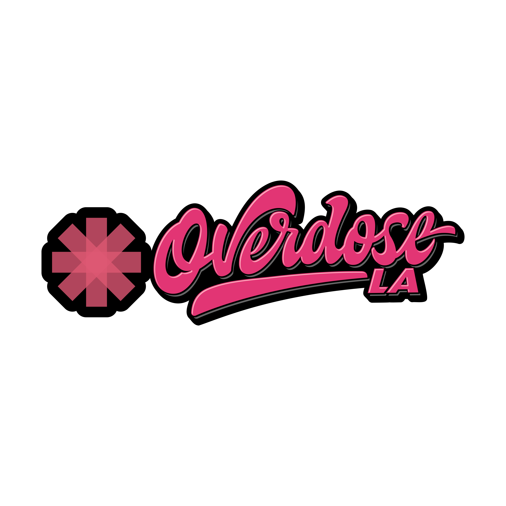

Matthew Ross Meakin (also Mateo; b. Los Angeles) is an American founder, self-taught software engineer, and recovery operator. He is the founder and CTO of Beora Care[1], a HIPAA-compliant clinical platform for behavioral health, and the founder of Basemate[2], accepted into Base Batches 002, Coinbase's onchain startup accelerator.[3]
Meakin entered the addiction-treatment industry as a patient on scholarship after a period of homelessness on Skid Row. He advanced through every clinical and operational role at the facility — Technician → Med Room Manager → Director of Operations — and taught himself to code along the way, eventually serving as the organization's Chief Technology Officer. He is self-taught with no formal computer-science background.
Since 2023 he has built and deployed two official onchain AI agents for Coinbase, used live on stage at Base Camp and DevConnect[4]. He also founded Overdose LA, a street-level harm-reduction program distributing food, naloxone, and clean equipment to unhoused individuals in Los Angeles.
Early life & film career
Meakin was raised in Los Angeles. At sixteen he left high school to take an Art Department position on Deadwood[5], the HBO western — his first credited film‑and‑television job. He briefly attended the California Institute of the Arts (CalArts) in Valencia before returning to set work full‑time.
For most of the following decade he worked as a Teamsters Hollywood Local 399 transportation captain and driver. Productions in this period include The Matrix Resurrections (Warner Bros.), Grace & Frankie (Netflix), and national commercial campaigns for Walmart.
Recovery & the turning point
In early 2021 Meakin was homeless on Skid Row and in active addiction. A patient scholarship at a Los Angeles treatment facility — later identified as Evergreen Fund[6] — admitted him for residential care. He has been continuously sober since.
Engineering at Evergreen Fund
Following admission Meakin remained at Evergreen Fund and was hired onto staff. Between 2021 and 2024 he advanced through four distinct roles, an arc he later described as the foundation of his clinical software work:[7]
| Year | Role | Scope |
|---|---|---|
| 2021 | Technician | Floor support, shift work, charting. |
| 2022 | Med Room Manager | Controlled-substance inventory, DEA compliance, distribution protocols. |
| 2023 | Director of Operations | Day-to-day operations, staffing, clinical workflow design for the full facility. |
| 2024 | Chief Technology Officer | Owned all technology; built internal systems from scratch; led digital transformation. Self-taught throughout. |
Meakin has no formal computer-science training and never enrolled in a coding bootcamp; the codebases he built at Evergreen were learned by reading open-source projects and shipping into production.
Founder work
Beora Care
Beora Care is a clinical operating system for behavioral health, organized around the principle that every patient is an article. The product ships as two surfaces — CareWiki, a Wikipedia-styled staff dashboard for compiling, reviewing, and auditing patient records, and Beora, an iOS care concierge for clients and clinical assistants. The platform is built to satisfy 42 CFR Part 2, the federal rule governing substance-use disorder records, in addition to HIPAA.[8]
Meakin designed the system's three-tier PHI architecture and built its human-in-the-loop review pipeline with a clinician trust graduation model — AI drafts are flagged, approved, or rejected by named staff before they touch a patient chart, and the agent's autonomy widens as its accuracy is verified against the clinician's edits over time.
Basemate
Basemate is a developer-tools company building on the Coinbase Base L2 network. In 2023 it was accepted into Base Batches 002, Coinbase's onchain startup accelerator.[3] The company's most visible work to date has been a pair of official onchain AI agents built for Coinbase and deployed at the company's flagship developer events.
Onchain agents
Through Basemate, Meakin has built and shipped two official onchain AI agents for Coinbase. Both went live on stage at flagship Coinbase developer events and remain the most public demonstrations of his agent-engineering work.
Base Camp agent
Built for and deployed live at Base Camp, Coinbase's developer event for the Base ecosystem. The agent operated onchain in front of an audience of developers, demonstrating a class of AI-native interactions the network is designed to support.[9]
DevConnect agent
The follow-up agent, shipped for and deployed at DevConnect, the Ethereum developer convening. The second iteration extended the first agent's capabilities into the broader Ethereum developer community.[10]
Community & harm reduction
Overdose LA

Meakin is the founder of Overdose LA, an independent street-level outreach program operating in Los Angeles. The program distributes food, the opioid antagonist naloxone, and harm-reduction supplies (including clean equipment) to unhoused individuals in encampments and on Skid Row — the neighborhood where Meakin was himself unhoused prior to entering treatment.[11]
Interventionist & sober companion work
In parallel with his founder work, Meakin operates a private 1-on-1 practice as an interventionist and sober companion for high-profile clients. The work includes crisis interventions, treatment-facility placement, and post-discharge continuity of care.
References
- beora.care — Beora Care, clinical platform.
- basemate.app — Basemate, onchain developer tooling.
- base.org/build/base-batches — Base Batches accelerator (Coinbase).
- blog.base.org — The State of Base at Basecamp 2025 — onchain agent deployed live.
- evergreenfund.life — Evergreen Fund, Los Angeles treatment facility.
- U.S. 42 CFR Part 2 — confidentiality of substance use disorder patient records.
- DevConnect — Ethereum developer convening.
- Overdose LA — Los Angeles harm-reduction outreach.
external · github.com/fweekshow · linkedin · mailto · mattm@beora.ai